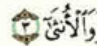
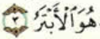
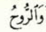
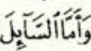
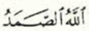

ተጅዊድ
የ አል ህጎች
አል የምትለው ከ አረበኛ 28ቱ ፊደሎች በፊት ስትመጣ የተለያዩ አህካም ሲኖራት እንደ አገባቧ አቀራራቸው ይለያያል።
የ አል አይነቶች
አል የምትለው እንደ አገባቧ ሁለት አይነቶች ናቸው። እነሱም
- ቀመርያህ
- ሸምስያህ
ናቸው።
ቀመርያህ
አል ከ 14 ፊደሎች በፊት ስትመጣ ላም አል-ቀመርያህ ትባላለች
ፊደሎቹም
- ሀምዛህ ( أ )
- ባ ( ب )
- ገ፟ይን ( غ )
- ሀ ( ح )
- ጂም ( ج )
- ካፍ ( ك )
- ዋው ( و )
- ኻ ( خ )
- ፋ ( ف )
- ዐይን ( ع )
- ቃፍ ( ق )
- ያ ( ي )
- ሚም ( م )
- ሐ ( ه )
ሲሆኑ ፤ ላምን በደንብ ግልፅ አድርገን እናነባታለን። እነዚህን ፊደሎች ለማስታወስ ኢብጊ፟ ሀጀከ ወኸፍ ዐቂይመሁ ( ابغ حجك و خف عقيمه ) የሚለውን መሸምደድ በቂ ነው።
ምሳሌዎች
| ፊደሎች |
ምሳሌዎች |
| ሀምዛህ |
 |
| ባ |
 |
| ገ፟ይን |
|
| ሀ |
|
| ጂም |
|
| ካፍ |
|
| ዋው |
|
| ኻ |
|
| ፋ |
 |
| ዐይን |
|
| ቃፍ |
|
| ያ |
|
| መ |
 |
| ሐ |
|
ሸምስያ
አል ከ 14 ፊደሎች በፊት ስትመጣ ላም አል-ሽምስያ ትባላለች
ፊደሎቹም
- ጧ ( ط )
- ሣ ( ث )
- ሷድ ( ص )
- ራ ( ر )
- ታ ( ت )
- ዷድ ( ض )
- ዛል ( ذ )
- ኑን ( ن )
- ዳል ( د )
- ሲን ( س )
- ዟ ( ظ )
- ዛ ( ذ )
- ሺን ( ش )
- ላም ( ل )
ሲሆኑ ፤ ላምን ግልፅ ሳናደርግ (ኢድጋ፟ም) እናነባታለን።
ምሳሌዎች
| ፊደሎች |
ምሳሌዎች |
| ጧ |
|
| ሣ |
|
| ሷድ |
|
| ራ |
 |
| ታ |
|
| ዷድ |
|
| ዛል |
 |
| ኑን |
|
| ዳል |
 |
| ሲን |
 |
| ዟ |
|
| ዛ |
 |
| ሺን |
|
| ላም |
 |
ሌሎች ስኩን የሆኑ ላሞች
ምንም እንኳን አል ውስጥ ያለችውን ላም ሸምስያህ እና ቀመርያ ብለን ብንከፍላቸውም ፤ ሌሎችን ላሞች ግን ግልፅ አድርገን እናነባቸዋልን።
ምሳሌዎች